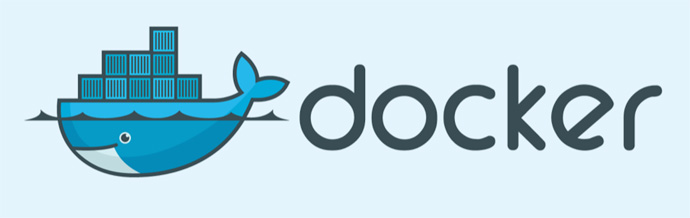

Docker Nedir ve Nasıl Kullanılır?
Docker, konteynır teknolojisini kullanarak uygulama geliştirmeyi, konuşlandırmayı ve çalıştırmayı kolaylaştıran açık kaynak kodlu bir platformdur. Günümüzde Google, IBM ve Microsoft gibi şirketlerin de kullanımıyla daha popüler bir hale gelmiştir. Docker'ın, sanal makinalara kıyasla daha esnek bir yapıya sahip olması ve tamamen ücretsiz olması tercih edilmesinde büyük çapta rol oynamaktadır.
Konteynır'ı kısaca açıklayacak olursak, Docker Engine tarafından çalıştırılan ve birbirlerinden izole edilmiş işlemlerin her birine verilen isimdir. Geliştiriciler, geliştirme ortamlarını bu konteynırlar içerisine gerekli konfigürasyonları ile birlikte paketleyerek istedikleri ortama aktarabilirler. Deniz taşımacılığından esinlenilen bu yapı hem geliştiriciler açısından hem de sistem yöneticileri açısından bir çok sorunu ortadan kaldırmaktadır.

- Docker Güvenli mi?
Konteynırların tek bir işletim sisteminde çalışması, akıllara güvenlik sorununu getirmektedir. Docker bu konuya yazılımsal çözümler getirmiştir. Konteynır içerisinde çalışan uygulamalar başka bir konteynır içersindeki uygulamayı aksi belirtilmedikçe göremez ve etkileyemezler.
Bunların yanı sıra aynı makinada bulunan konteynırların ortak kernel kullanımı geliştiricileri kaygılandıran önemli bir konudur. Docker bu konuda sanal makinaların verdiği güveni yakın gelecekte veremeyecek gibi gözükse de bu teknoloji yakın gelecekte daha da olgunlaşacak ve bununla birlikte daha stabil ve güvenilir bir hale gelecektir.
- Docker ve Sanal Makinaler Arasındaki Farklar Nelerdir?
Docker, uygulamaları tek bir işletim sistemi üzerinde konteynır yapılarını kullanarak izolasyonunu sağlar. Sanal makine teknolojisinde ise bu yapı, Hypervisor aracılığıyla üzerinde bulunan sistemleri işletim sistemi seviyesinde ayırmasıyla elde edilir. Bu mimari yapı farkından dolayı, Docker sanal makinalara kıyasla daha dinamik bir yapıya sahiptir diyebiliriz.
Nesnelerin İnterneti(IoT) ve Sensör Uygulamaları
Nesnelerin interneti (IoT) kısaca, nesnelerin insan müdahalesi olmadan, kendi aralarında belirli protokoller aracılığı ile iletişim kurmasıyla oluşan veri ağıdır.
Gün geçtikçe popülaritesi ve kullanım alanı artan nesnelerin interneti kapsamında 2016 itibari ile akıllı telefonlar, tabletler ve bilgisayarlar dışında yaklaşık 6,4 milyar ile 9 milyar arasında cihazın internete bağlı olduğu tahmin ediliyor. Bu sayı tüm cihazlar dahil edildiğinde yaklaşık 17,6 milyar olarak tahmin ediliyor.
IoT Uygulamaları Nelerdir?
- Akıllı şehirler
- Ödeme-reklam-pazarlama uygulamaları
- Ev otomasyon uygulamaları